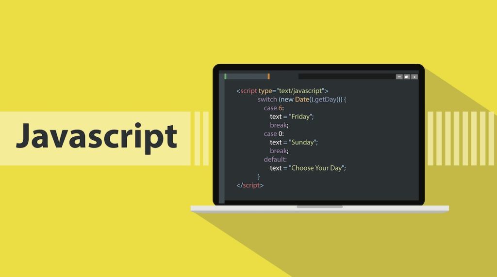

Introduction to HTML
Hypertext Markup Language (HTML) is the standard markup language for documents designed to be displayed in a web browser.HTML elements are the building blocks of HTML pages. With HTML constructs, images and other objects such as interactive forms may be embedded into the rendered page.
Read More

Introduction to CSS
Cascading Style Sheets (CSS) is a style sheet language used for describing the presentation of a document written in a markup language like HTML. CSS is a cornerstone technology of the World Wide Web, alongside HTML and JavaScript.CSS is designed to enable the separation of presentation and content.
Read More

Introduction to Javascript
JavaScript, often abbreviated as JS, is a programming language that conforms to the ECMAScript specification. JavaScript is high-level, often just-in-time compiled, and multi-paradigm. It has curly-bracket syntax, dynamic typing, prototype-based object-orientation, and first-class functions.
Read More

Introduction to Bootstrap
Bootstrap is a web framework that focuses on simplifying the development of informative web pages. The primary purpose of adding it is to apply bootstrap's choices of color, size, font and layout. Bootstrap also comes with several JavaScript components in the form of jQuery plugins.
Read More